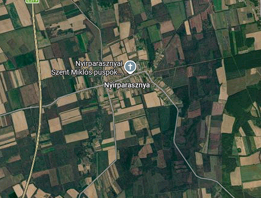
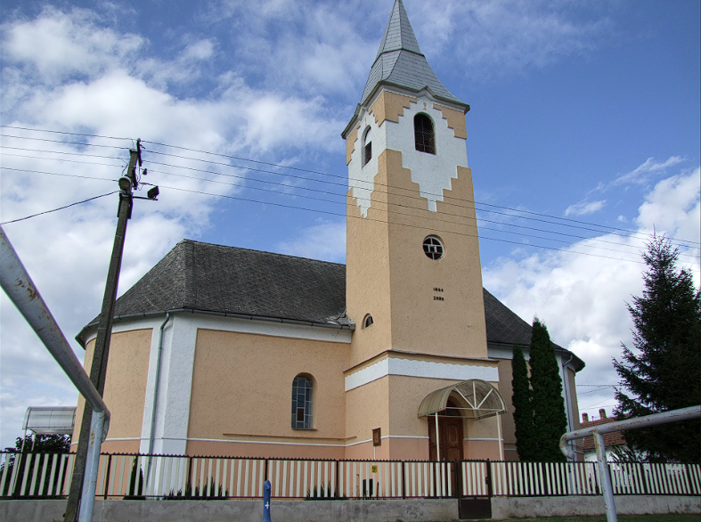
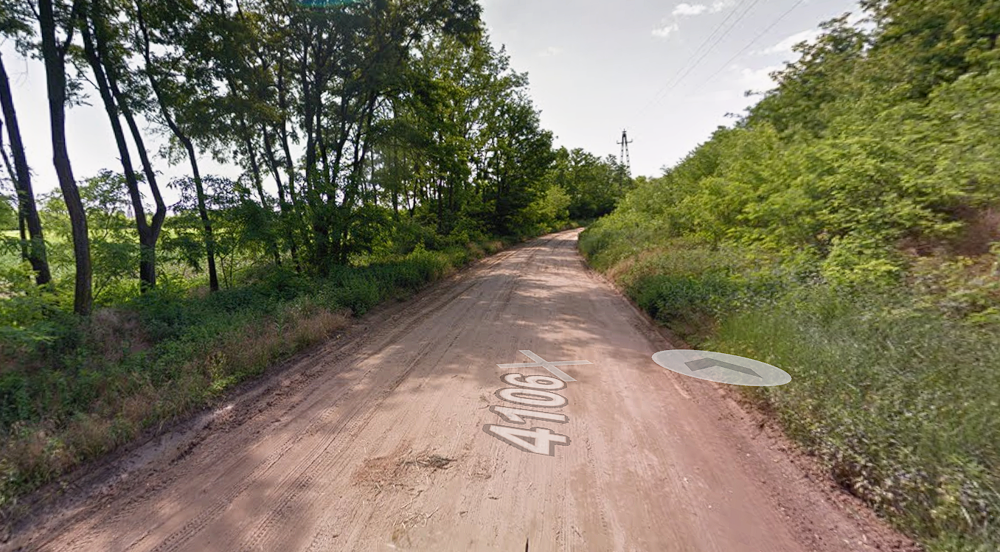
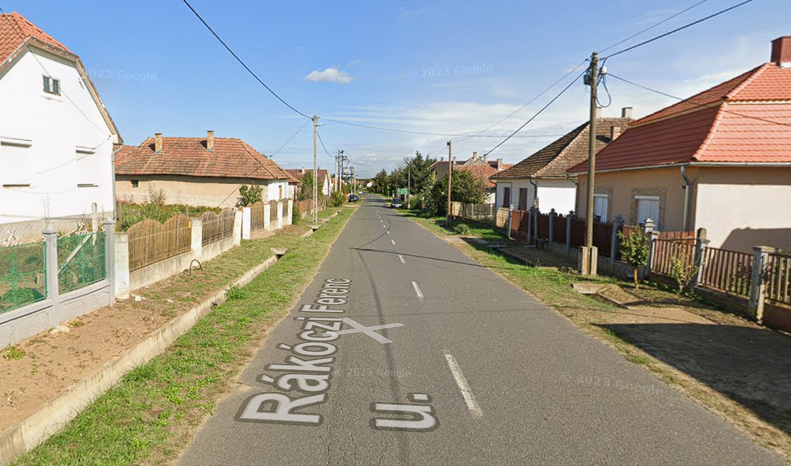

Templom
A település egyik fontos közösségi és építészeti értéke.
Tovább →Üdvözöllek Nyírparasznyán!
Ismerd meg Nyírparasznya történetét, természeti környezetét és mindennapjait!
Fedezd fel → Vidítsd fel KrisztiántRÖVIDEN A TELEPÜLÉSRŐL
Nyírparasznya Szabolcs-Szatmár-Bereg vármegyében található település. A község nyugodt, falusias környezetével és közösségi életével érdekes része a térségnek.
A település környezetében megtalálható a Szabolcs-Szatmár-Bereg vármegyére jellemző természeti és mezőgazdasági táj.
Szabolcs-Szatmár-Bereg vármegye
Nyugodt, természetközeli vidék
Falusias település
MÚLT ÉS JELEN
A település története szorosan kapcsolódik a Szabolcs-Szatmár-Bereg térség történetéhez. A falu fejlődésében fontos szerepet játszott a helyi közösség, a mezőgazdaság és a környező településekkel kialakított kapcsolatok.
Napjainkban Nyírparasznya egy békés, nyugodt település, ahol a hagyományok és a közösségi élet továbbra is fontos szerepet töltenek be.
ÉRDEKESSÉGEK
KÉPEK




KÖZÖSSÉGI ÉLET
Helyi közösségi esemény.
Közösségi rendezvény a településen.
Közös program a helyi lakosság számára.
KAPCSOLAT
Ha szeretnél többet megtudni a településről, keresd fel a hivatalos forrásokat és a helyi közösségi oldalakat.